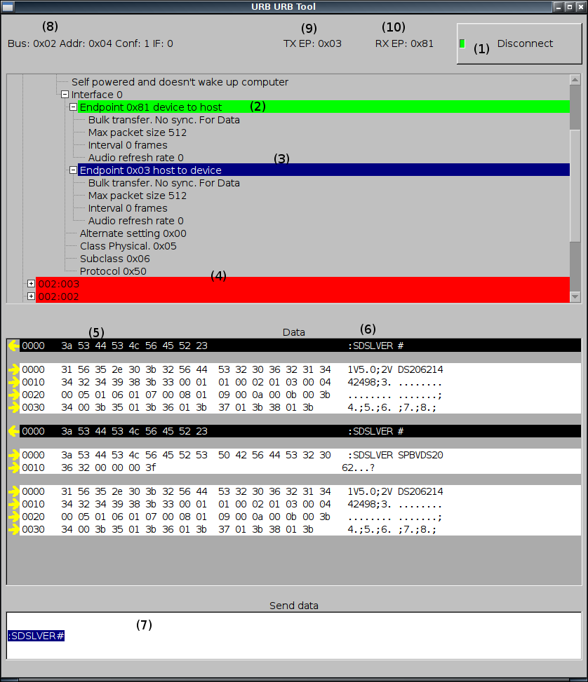

Urb Urb Tool
Send and receive USB block messages
The itch
While developing driver for oscilloscope, I wanted to send my commands interactively and just test and beat the features out of the device.
The scratch
This program uses FLTK to make its UI, libusb to communicate. All civilized distributions should have them. For compilation XXD might be required to create images.cxx file.
Compile with (GNU)make and run with ./urburbtool No install targets provided.
Etymology
Wireshark report these packet as URB_Bulk_in and out. URB URB tool was written to get some contol over URBbing devices.
Known bugs
- The horizontal scrollbar sucks with FLTK 1.3.3. SVN version works.
Usage
- Disconnect button. This button is active when connection is made. To make connection select two usable (2) (in and out) end points. When connection is made, device tree is deactivated and send data input (7) is activated.
- Usable end point. With green background there is usable end point. (Opened OK and bulk transfer mode)
- Selected end point.
- Unusable device. Opening device failed. Red background.
- Sent or received data in hex. Arrow left as icon and black background is sent data and arrow right and white background is received data. First column is something like byte count or address.
- Data in ASCII.
- Data to be sent. Enter sends. Initially deactivated. Read tool tip for more information.
- Bus, Address configuration and interface to be used.
- Host to device end point.
- Device to host end point.
License
GPL v3+